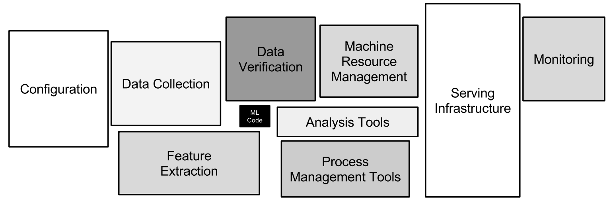

Appendix
Machine Learning Operations (MLOps)
The paper Hidden Technical Debt in Machine Learning Systems gave birth to the field MLOps which aims to address concerns of technical debt in machine learning systems.
Machine learning offers a fantastically powerful toolkit for building useful complex prediction systems quickly. This paper argues it is dangerous to think of these quick wins as coming for free. Using the software engineering framework of technical debt, we find it is common to incur massive ongoing maintenance costs in real-world ML systems. We explore several ML-specific risk factors to account for in system design. These include boundary erosion, entanglement, hidden feedback loops, undeclared consumers, data dependencies, configuration issues, changes in the external world, and a variety of system-level anti-patterns. (Hidden Technical Debt in Machine Learning Systems)
You can’t be an AI expert these days and not have some grounding in software engineering.
– Grady Booch
Only a small fraction of real-world ML systems is composed of the ML code, as shown by the small black box in the middle. The required surrounding infrastructure is vast and complex.
Identity and Access Management (IAM)
Our best practice is to create a Roles for data science, which attached policies listed below.
Go to the IAM console.
Select Roles and then Create role.
Under Choose the service that will use this role select SageMaker. And Choose Next
Choose Attach policies and search for
AmazonS3FullAccessAWSGlueServiceRoleAmazonAthenaFullAccessAmazonRedshiftFullAccessAmazonSageMakerFullAccessAmazonEC2ContainerRegistryFullAccessAWSStepFunctionsFullAccessAWSLambda_FullAccessCloudWatchEventsFullAccessCloudWatchFullAccessSecretsManagerReadWrite
Choose Next until you can enter a Role name.
Enter a name such as
datalake-comsumer-datascienceand then select Create role.
If you are running this notebook outside of SageMaker, the SDK will use your configured AWS CLI configuration. For more information, see Configuring the AWS CLI.